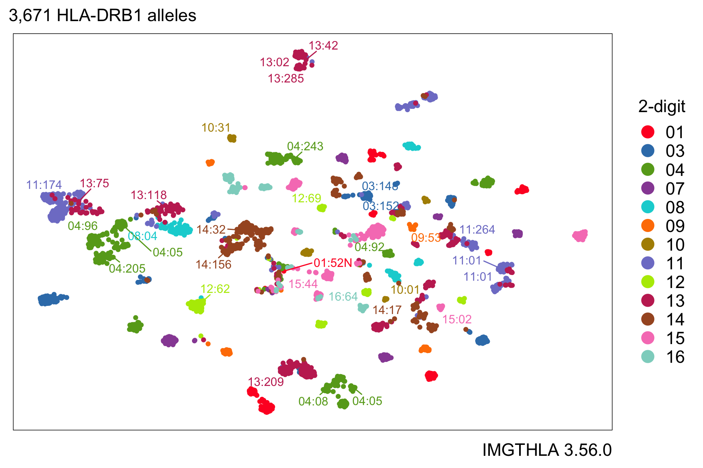

Introduction
Kamil Slowikowski
2025-02-06
hlabud is an R package that provides functions to facilitate download and analysis of human leukocyte antigen (HLA) genotype sequence alignments from IMGTHLA in R.
Let’s consider a question that we might want to answer about HLA genotypes.
What amino acid positions are different between two genotypes?
library(hlabud)
a <- hla_alignments("DRB1")
a$release
#> [1] "3.59.0"
dosage(a$onehot, c("DRB1*03:01:05", "DRB1*03:02:03"))
#> F26 Y26 D28 E28 F47 Y47 G86 V86
#> DRB1*03:01:05 0 1 1 0 1 0 0 1
#> DRB1*03:02:03 1 0 0 1 0 1 1 0What nucleotides are different?
n <- hla_alignments("DRB1", type = "nuc")
n$release
#> [1] "3.59.0"
dosage(n$onehot, c("DRB1*03:01:05", "DRB1*03:02:03"))
#> A164 T164 C171 G171 A227 T227 A240 G240 G344 T344 G345 T345 A357
#> DRB1*03:01:05 1 0 1 0 0 1 1 0 0 1 1 0 1
#> DRB1*03:02:03 0 1 0 1 1 0 0 1 1 0 0 1 0
#> G357
#> DRB1*03:01:05 0
#> DRB1*03:02:03 1Installation
The quickest way to get hlabud is to install from GitHub:
# install.packages("devtools")
devtools::install_github("slowkow/hlabud")Below, I included a few usage examples. I hope they inspire you to share your own HLA analyses.
The source code for this page is available here.
Thank you for reporting issues with hlabud.
Get a one-hot encoded matrix for all HLA-DRB1 alleles
We can use hla_alignments("DRB1") to load the
DRB1_prot.txt file from the latest IMGTHLA
release:
library(hlabud)
a <- hla_alignments(gene = "DRB1", verbose = TRUE)
#> Reading /home/runner/.local/share/hlabud/3.59.0/alignments/DRB1_prot.txtThe a object is a list with three items:
str(a)
#> List of 7
#> $ sequences: Named chr [1:3786] "MVCLKLPGGSCMTALTVTLMVLSSPLALAGDTRPRFLWQLKFECHFFNGTERVR.LLERCIYNQEE.SVRFDSDVGEYRAVTELGRPDAEYWNSQKDLLEQRRAAVDTYCR"| __truncated__ "------------------------------------------------------.-----------.--------------------------------------------"| __truncated__ "------------------------------------------------------.-----------.--------------------------------------------"| __truncated__ "------------------------------------------------------.-----------.--------------------------------------------"| __truncated__ ...
#> ..- attr(*, "names")= chr [1:3786] "DRB1*01:01:01:01" "DRB1*01:01:01:02" "DRB1*01:01:01:03" "DRB1*01:01:01:04" ...
#> $ alleles : chr [1:3786, 1:288] "M" "M" "M" "M" ...
#> ..- attr(*, "dimnames")=List of 2
#> .. ..$ : chr [1:3786] "DRB1*01:01:01:01" "DRB1*01:01:01:02" "DRB1*01:01:01:03" "DRB1*01:01:01:04" ...
#> .. ..$ : chr [1:288] "n29" "n28" "n27" "n26" ...
#> $ onehot : num [1:3786, 1:1725] 0 0 0 0 0 0 0 0 0 0 ...
#> ..- attr(*, "dimnames")=List of 2
#> .. ..$ : chr [1:3786] "DRB1*01:01:01:01" "DRB1*01:01:01:02" "DRB1*01:01:01:03" "DRB1*01:01:01:04" ...
#> .. ..$ : chr [1:1725] "n29unk" "Mn29" "n28unk" "Ln28" ...
#> $ gene : chr "DRB1"
#> $ type : chr "prot"
#> $ release : chr "3.59.0"
#> $ file : chr "/home/runner/.local/share/hlabud/3.59.0/alignments/DRB1_prot.txt"a$sequences has amino acid sequence alignments in a
named character vector:
substr(head(a$sequences, 6), 1, 50)
#> DRB1*01:01:01:01
#> "MVCLKLPGGSCMTALTVTLMVLSSPLALAGDTRPRFLWQLKFECHFFNGT"
#> DRB1*01:01:01:02
#> "--------------------------------------------------"
#> DRB1*01:01:01:03
#> "--------------------------------------------------"
#> DRB1*01:01:01:04
#> "--------------------------------------------------"
#> DRB1*01:01:01:05
#> "--------------------------------------------------"
#> DRB1*01:01:01:06
#> "--------------------------------------------------"Here are the conventions used for alignments (copied from the EBI help page):
- The entry for each allele is displayed in respect to the reference sequences.
- Where identity to the reference sequence is present the base will be displayed as a hyphen (-).
- Non-identity to the reference sequence is shown by displaying the appropriate base at that position.
- Where an insertion or deletion has occurred this will be represented by a period (.).
- If the sequence is unknown at any point in the alignment, this will be represented by an asterisk (*).
- In protein alignments for null alleles, the ‘Stop’ codons will be represented by a hash (X).
- In protein alignments, sequence following the termination codon, will not be marked and will appear blank.
- These conventions are used for both nucleotide and protein alignments.
a$alleles has a matrix of amino acids with one column
for each position:
a$alleles[1:5,1:40]
#> n29 n28 n27 n26 n25 n24 n23 n22 n21 n20 n19 n18 n17 n16 n15
#> DRB1*01:01:01:01 "M" "V" "C" "L" "K" "L" "P" "G" "G" "S" "C" "M" "T" "A" "L"
#> DRB1*01:01:01:02 "M" "V" "C" "L" "K" "L" "P" "G" "G" "S" "C" "M" "T" "A" "L"
#> DRB1*01:01:01:03 "M" "V" "C" "L" "K" "L" "P" "G" "G" "S" "C" "M" "T" "A" "L"
#> DRB1*01:01:01:04 "M" "V" "C" "L" "K" "L" "P" "G" "G" "S" "C" "M" "T" "A" "L"
#> DRB1*01:01:01:05 "M" "V" "C" "L" "K" "L" "P" "G" "G" "S" "C" "M" "T" "A" "L"
#> n14 n13 n12 n11 n10 n9 n8 n7 n6 n5 n4 n3 n2 n1 1
#> DRB1*01:01:01:01 "T" "V" "T" "L" "M" "V" "L" "S" "S" "P" "L" "A" "L" "A" "G"
#> DRB1*01:01:01:02 "T" "V" "T" "L" "M" "V" "L" "S" "S" "P" "L" "A" "L" "A" "G"
#> DRB1*01:01:01:03 "T" "V" "T" "L" "M" "V" "L" "S" "S" "P" "L" "A" "L" "A" "G"
#> DRB1*01:01:01:04 "T" "V" "T" "L" "M" "V" "L" "S" "S" "P" "L" "A" "L" "A" "G"
#> DRB1*01:01:01:05 "T" "V" "T" "L" "M" "V" "L" "S" "S" "P" "L" "A" "L" "A" "G"
#> 2 3 4 5 6 7 8 9 10 11
#> DRB1*01:01:01:01 "D" "T" "R" "P" "R" "F" "L" "W" "Q" "L"
#> DRB1*01:01:01:02 "D" "T" "R" "P" "R" "F" "L" "W" "Q" "L"
#> DRB1*01:01:01:03 "D" "T" "R" "P" "R" "F" "L" "W" "Q" "L"
#> DRB1*01:01:01:04 "D" "T" "R" "P" "R" "F" "L" "W" "Q" "L"
#> DRB1*01:01:01:05 "D" "T" "R" "P" "R" "F" "L" "W" "Q" "L"a$onehot has a one-hot encoded matrix with one column
for each amino acid at each position:
a$onehot[1:5,1:25]
#> n29unk Mn29 n28unk Ln28 Vn28 n27unk Cn27 n26unk Ln26 n25unk
#> DRB1*01:01:01:01 0 1 0 0 1 0 1 0 1 0
#> DRB1*01:01:01:02 0 1 0 0 1 0 1 0 1 0
#> DRB1*01:01:01:03 0 1 0 0 1 0 1 0 1 0
#> DRB1*01:01:01:04 0 1 0 0 1 0 1 0 1 0
#> DRB1*01:01:01:05 0 1 0 0 1 0 1 0 1 0
#> Kn25 Rn25 Sn25 n24unk Fn24 Ln24 n23unk Pn23 n22unk Gn22 n21unk
#> DRB1*01:01:01:01 1 0 0 0 0 1 0 1 0 1 0
#> DRB1*01:01:01:02 1 0 0 0 0 1 0 1 0 1 0
#> DRB1*01:01:01:03 1 0 0 0 0 1 0 1 0 1 0
#> DRB1*01:01:01:04 1 0 0 0 0 1 0 1 0 1 0
#> DRB1*01:01:01:05 1 0 0 0 0 1 0 1 0 1 0
#> Cn21 Gn21 n20unk Sn20
#> DRB1*01:01:01:01 0 1 0 1
#> DRB1*01:01:01:02 0 1 0 1
#> DRB1*01:01:01:03 0 1 0 1
#> DRB1*01:01:01:04 0 1 0 1
#> DRB1*01:01:01:05 0 1 0 1What is a one-hot encoded matrix? Here is a simple example to demonstrate the idea:
Convert genotypes to a dosage matrix
Suppose we have some individuals with the following genotypes:
genotypes <- c(
"DRB1*12:02:02:03,DRB1*12:02:02:03",
"DRB1*04:174,DRB1*15:152",
"DRB1*04:56:02,DRB1*15:01:48",
"DRB1*14:172,DRB1*04:160",
"DRB1*04:359,DRB1*04:284:02"
)If we want to run an association test on the amino acid positions, then we need to convert the genotype names to a matrix of allele dosages (e.g., 0, 1, 2).
We can use dosage() to convert each individual’s
genotypes to amino acid dosages:
dosage <- dosage(a$onehot, genotypes)
dosage[,1:8]
#> n29unk Mn29 n28unk Vn28 n27unk Cn27 n26unk
#> DRB1*12:02:02:03,DRB1*12:02:02:03 0 2 0 2 0 2 0
#> DRB1*04:174,DRB1*15:152 2 0 2 0 2 0 2
#> DRB1*04:56:02,DRB1*15:01:48 2 0 2 0 2 0 2
#> DRB1*14:172,DRB1*04:160 2 0 2 0 2 0 2
#> DRB1*04:359,DRB1*04:284:02 2 0 2 0 2 0 2
#> Ln26
#> DRB1*12:02:02:03,DRB1*12:02:02:03 2
#> DRB1*04:174,DRB1*15:152 0
#> DRB1*04:56:02,DRB1*15:01:48 0
#> DRB1*14:172,DRB1*04:160 0
#> DRB1*04:359,DRB1*04:284:02 0
dim(dosage)
#> [1] 5 428Note:
The
dosagematrix has one row for each individual and one column for each amino acid at each position. By default,dosage()will discard the columns where all individuals are identical.If input allele names are truncated to 4-digits or 2-digits (e.g.
DRB1*03:01orDRB1*03), then hlabud will pick the first allele that matches the input allele (e.g.DRB1*03:01:01:01). If you want a specific allele, then you need to provide the full allele name in the input.
Please be careful to check that your data looks the way you expect!
Logistic regression association for amino acid positions
Let’s simulate a dataset with cases and controls to demonstrate one approach for testing which amino acid positions might be associated with cases.
set.seed(2)
n <- 100
d <- data.frame(
geno = paste(
sample(rownames(a$onehot), n, replace = TRUE),
sample(rownames(a$onehot), n, replace = TRUE),
sep = ","
),
age = sample(21:100, n, replace = TRUE),
case = sample(0:1, n, replace = TRUE)
)
d <- cbind(d, dosage(a$onehot, d$geno))
d[1:5,1:6]
#> geno age case n29unk Mn29 n28unk
#> DRB1*04:224,DRB1*09:29 DRB1*04:224,DRB1*09:29 73 0 2 0 2
#> DRB1*04:05:23,DRB1*14:183 DRB1*04:05:23,DRB1*14:183 79 0 2 0 2
#> DRB1*13:263,DRB1*04:40 DRB1*13:263,DRB1*04:40 67 0 2 0 2
#> DRB1*03:75,DRB1*04:95:02 DRB1*03:75,DRB1*04:95:02 38 1 2 0 2
#> DRB1*03:53,DRB1*01:02:09 DRB1*03:53,DRB1*01:02:09 67 0 2 0 2Our simulated dataset has 100 individuals, 51 cases and 49 controls.
We also have one column for each amino acid position that we might want
to test for association with the case variable.
One possible approach for association testing is to use
glm() to fit a logistic regression model for each amino
acid position. This could reveal if any amino acid position might be
associated with the case variable in our simulated
dataset.
# prepare column names for use in formulas
ix <- 4:ncol(d)
colnames(d)[ix] <- sprintf("VAR%s", colnames(d)[ix])
# select the amino acid positions that have at least 3 people with dosage > 0
my_as <- names(which(colSums(d[,4:ncol(d)] > 0) >= 3))
# run the association tests
my_glm <- rbindlist(pblapply(my_as, function(my_a) {
f <- sprintf("case ~ %s", my_a)
glm(as.formula(f), data = d, family = "binomial") %>%
parameters(exponentiate = TRUE)
}))
# look at the top hits
my_glm %>%
arrange(p) %>%
filter(!Parameter %in% c("(Intercept)")) %>%
head
#> Parameter Coefficient SE CI CI_low CI_high z df_error
#> <char> <num> <num> <num> <num> <num> <num> <num>
#> 1: VARR233 0.3740889 0.1537387 0.95 0.1585149 0.8055764 -2.392548 Inf
#> 2: VARQ10 2.0504158 0.6343398 0.95 1.1365450 3.8562617 2.320974 Inf
#> 3: VART12 0.5050496 0.1574155 0.95 0.2673406 0.9158840 -2.191644 Inf
#> 4: VARK12 1.9800034 0.6171339 0.95 1.0918414 3.7405461 2.191644 Inf
#> 5: VARS11 0.5086017 0.1578058 0.95 0.2700494 0.9200341 -2.179011 Inf
#> 6: VARY10 0.5239755 0.1638312 0.95 0.2770470 0.9529264 -2.067071 Inf
#> p
#> <num>
#> 1: 0.01673184
#> 2: 0.02028826
#> 3: 0.02840525
#> 4: 0.02840525
#> 5: 0.02933082
#> 6: 0.03872745The volcano below shows the Odds Ratio and P-value for each amino acid position. The top hits with P < 0.05 are labeled.

In this simulation, the case variable is associated with
R233 (P = 0.017, OR = 0.37, 95% CI 0.16 to 0.81).
UMAP embedding of HLA-DRB1 alleles
There are many possibilities for further analysis of the one-hot encoding matrix.
For example, here is a UMAP embedding of HLA-DRB1 alleles encoded as a one-hot amino acid matrix with 1725 columns, one for each amino acid at each position. The color indicates the 2-digit allele name.
uamp(a$onehot, n_epochs = 200, min_dist = 1, spread = 2)
We can highlight which alleles have aspartic acid (Asp or D) at position 57:
Or we can use color to represent the amino acid residue at position 57:
Get HLA allele frequencies from Allele Frequency Net Database (AFND)
The hlabud R package includes a table of HLA allele frequencies from the Allele Frequency Net Database (AFND).
If you use this data, please cite the latest manuscript about Allele Frequency Net Database:
- Gonzalez-Galarza FF, McCabe A, Santos EJMD, Jones J, Takeshita L, Ortega-Rivera ND, et al. Allele frequency net database (AFND) 2020 update: gold-standard data classification, open access genotype data and new query tools. Nucleic Acids Res. 2020;48: D783–D788. doi:10.1093/nar/gkz1029
af <- hla_frequencies()
af
#> # A tibble: 123,502 × 7
#> group gene allele population indivs_over_n alleles_over_2n n
#> <chr> <chr> <chr> <chr> <dbl> <dbl> <dbl>
#> 1 hla A A*01:01 Argentina Rosario To… 15.1 0.076 86
#> 2 hla A A*01:01 Armenia combined Reg… NA 0.125 100
#> 3 hla A A*01:01 Australia Cape York … NA 0.053 103
#> 4 hla A A*01:01 Australia Groote Eyl… NA 0.027 75
#> 5 hla A A*01:01 Australia New South … NA 0.187 134
#> 6 hla A A*01:01 Australia Yuendumu A… NA 0.008 191
#> 7 hla A A*01:01 Austria 27 0.146 200
#> 8 hla A A*01:01 Azores Central Islan… NA 0.08 59
#> 9 hla A A*01:01 Azores Oriental Isla… NA 0.115 43
#> 10 hla A A*01:01 Azores Terceira Isla… NA 0.109 130
#> # ℹ 123,492 more rowsWe can use this data to plot the frequency of a specific allele (e.g. DQB1*02:01) in populations with more than 1000 sampled individuals:
my_allele <- "DQB1*02:01"
my_af <- af %>% filter(allele == my_allele) %>%
filter(n > 1000) %>%
arrange(-alleles_over_2n)
ggplot(my_af) +
aes(x = alleles_over_2n, y = reorder(population, alleles_over_2n)) +
scale_y_discrete(position = "right") +
geom_colh() +
labs(
x = "Allele Frequency (Alleles / 2N)",
y = NULL,
title = glue("Frequency of {my_allele} across {length(unique(my_af$population))} populations"),
caption = "Data from AFND http://allelefrequencies.net"
)
See github.com/slowkow/allelefrequencies for more examples of how we might use this data.
Compute HLA divergence with the Grantham distance matrix
Humans are diploid, so each of us has two copies of each HLA gene. An individual with two highly dissimilar alleles can bind a greater number of different peptides than a homozygous individual (https://doi.org/10.1007/BF02918202):
Each MHC class II allele has the capacity to bind and present a specific set of peptides from processed antigens. The inability of a specific class II allele to bind and present a fragment derived from a processed antigen results in the loss of immune responsiveness for that antigen in individuals homozygous for that class II allele.
The amino acid distance matrix by Granthan 1974 (https://doi.org/10.1126/science.185.4154.862) encodes information about the composition, polarity, and molecular volume of each amino acid.
grantham
#> amino c p v
#> 1 Ser 1.42 9.2 32.0
#> 2 Arg 0.65 10.5 124.0
#> 3 Leu 0.00 4.9 111.0
#> 4 Pro 0.39 8.0 32.5
#> 5 Thr 0.71 8.6 61.0
#> 6 Ala 0.00 8.1 31.0
#> 7 Val 0.00 5.9 84.0
#> 8 Gly 0.74 9.0 3.0
#> 9 Ile 0.00 5.2 111.0
#> 10 Phe 0.00 5.2 132.0
#> 11 Tyr 0.20 6.2 136.0
#> 12 Cys 2.75 5.5 55.0
#> 13 His 0.58 10.4 96.0
#> 14 Gln 0.89 10.5 85.0
#> 15 Asn 1.33 11.6 56.0
#> 16 Lys 0.33 11.3 119.0
#> 17 Asp 1.38 13.0 54.0
#> 18 Glu 0.92 12.3 83.0
#> 19 Met 0.00 5.7 105.0
#> 20 Trp 0.13 5.4 170.0We can use that matrix to compute an HLA divergence metric for a set of individuals like this:
my_genos <- c("A*23:01:12,A*24:550", "A*25:12N,A*11:27", "A*24:381,A*33:85")
hla_divergence(my_genos)
#> A*23:01:12,A*24:550 A*25:12N,A*11:27 A*24:381,A*33:85
#> 0.511811 3.464567 5.094488The divergence for a homozygote is equal to zero, by definition:
hla_divergence("A*01:01,A*01:01")
#> A*01:01,A*01:01
#> 0hlabud includes R code for the divergence calculations that was translated from the original Perl code by Pierini & Lenz 2018 (https://doi.org/10.1093/molbev/msy116).
The amino acid distance matrix is easily accessible, and we provide two built-in options “grantham” and “uniform”:
amino_distance_matrix(method = "grantham")
#> A R N D C Q E G H I L K M F P S T W Y
#> A 0 112 111 126 195 91 107 60 86 94 96 106 84 113 27 99 58 148 112
#> R 112 0 86 96 180 43 54 125 29 97 102 26 91 97 103 110 71 101 77
#> N 111 86 0 23 139 46 42 80 68 149 153 94 142 158 91 46 65 174 143
#> D 126 96 23 0 154 61 45 94 81 168 172 101 160 177 108 65 85 181 160
#> C 195 180 139 154 0 154 170 159 174 198 198 202 196 205 169 112 149 215 194
#> Q 91 43 46 61 154 0 29 87 24 109 113 53 101 116 76 68 42 130 99
#> E 107 54 42 45 170 29 0 98 40 134 138 56 126 140 93 80 65 152 122
#> G 60 125 80 94 159 87 98 0 98 135 138 127 127 153 42 56 59 184 147
#> H 86 29 68 81 174 24 40 98 0 94 99 32 87 100 77 89 47 115 83
#> I 94 97 149 168 198 109 134 135 94 0 5 102 10 21 95 142 89 61 33
#> L 96 102 153 172 198 113 138 138 99 5 0 107 15 22 98 145 92 61 36
#> K 106 26 94 101 202 53 56 127 32 102 107 0 95 102 103 121 78 110 85
#> M 84 91 142 160 196 101 126 127 87 10 15 95 0 28 87 135 81 67 36
#> F 113 97 158 177 205 116 140 153 100 21 22 102 28 0 114 155 103 40 22
#> P 27 103 91 108 169 76 93 42 77 95 98 103 87 114 0 74 38 147 110
#> S 99 110 46 65 112 68 80 56 89 142 145 121 135 155 74 0 58 177 144
#> T 58 71 65 85 149 42 65 59 47 89 92 78 81 103 38 58 0 128 92
#> W 148 101 174 181 215 130 152 184 115 61 61 110 67 40 147 177 128 0 37
#> Y 112 77 143 160 194 99 122 147 83 33 36 85 36 22 110 144 92 37 0
#> V 64 96 133 152 192 96 121 109 84 29 32 97 21 50 68 124 69 88 55
#> V
#> A 64
#> R 96
#> N 133
#> D 152
#> C 192
#> Q 96
#> E 121
#> G 109
#> H 84
#> I 29
#> L 32
#> K 97
#> M 21
#> F 50
#> P 68
#> S 124
#> T 69
#> W 88
#> Y 55
#> V 0Download and unpack all data from the latest IMGTHLA release
If you only want to use hla_alignments(), then you don’t
need install_hla() because data files are downloaded
automatically as needed and cached for future use.
But some users might need access to additional files that are only present in the full data release.
Run install_hla() to download and unpack the latest IMGTHLA
release. The destination folder for the downloaded data files is
getOption("hlabud_dir") (automatically tailored to your
operating system thanks to the rappdirs package).
Here are a few examples of how to download releases or get a list of release names.
Download the latest release (default) or a specific release:
# Download all of the data (120MB) for the latest IMGTHLA release
install_hla(release = "latest")
# Download a specific release
install_hla(release = "3.51.0")Optionally, get or set the directory hlabud uses to store the data:
getOption("hlabud_dir")
#> [1] "/home/username/.local/share/hlabud"
# Manually override the directory for hlabud to use
options(hlabud_dir = "/path/to/my/dir")After installing a few releases, the hlabud folder might look like this:
❯ ls -lah "/home/user/.local/share/hlabud"
total 207M
drwxrwxr-x 3 user user 32 Apr 5 01:19 3.30.0
drwxrwxr-x 11 user user 4.0K Apr 7 19:31 3.40.0
drwxrwxr-x 12 user user 4.0K Apr 5 00:27 3.51.0
-rw-rw-r-- 1 user user 15K Apr 7 19:23 tags.json
-rw-rw-r-- 1 user user 79M Apr 7 19:28 v3.40.0-alpha.tar.gz
-rw-rw-r-- 1 user user 129M Apr 4 20:07 v3.51.0-alpha.tar.gzCount the number of alleles in each IMGTHLA release
We can get a list of the release names:
releases <- hla_releases()
releases
#> [1] "3.59.0" "3.58.0" "3.57.0" "3.56.0" "3.55.0" "3.54.0"
#> [7] "3.53.0" "3.52.0" "3.51.0" "3.50.0" "3.49.0" "3.48.0"
#> [13] "3.47.0" "3.46.0" "3.45.1" "3.45.01" "3.45.0.1" "3.45.0"
#> [19] "3.44.1" "3.44.0" "3.43.0" "3.42.0" "3.41.2" "3.41.0"
#> [25] "3.40.0" "3.39.0" "3.38.0" "3.37.0" "3.36.0" "3.35.0"Then we can get the allele names for each release:
my_alleles <- rbindlist(lapply(releases, function(release) {
retval <- hla_alleles(release = release)
retval$release <- release
return(retval)
}), fill = TRUE)
#> Warning in hla_alleles(release = release): unrecognized release name
#> 'Allelelist.3451.txt'
#> Warning in hla_alleles(release = release): unrecognized release name
#> 'Allelelist.34501.txt'
#> Warning in hla_alleles(release = release): unrecognized release name
#> 'Allelelist.34501.txt'
#> Warning in hla_alleles(release = release): unrecognized release name
#> 'Allelelist.3441.txt'
#> Warning in hla_alleles(release = release): unrecognized release name
#> 'Allelelist.3412.txt'Next, count how many alleles we have in each release:
d <- my_alleles %>% count(release) %>% filter(n > 1)
d
#> release n
#> <char> <int>
#> 1: 3.35.0 21683
#> 2: 3.36.0 22548
#> 3: 3.37.0 24093
#> 4: 3.38.0 25958
#> 5: 3.39.0 26512
#> 6: 3.40.0 27273
#> 7: 3.41.0 27980
#> 8: 3.42.0 28786
#> 9: 3.43.0 29417
#> 10: 3.44.0 30523
#> 11: 3.45.0 31552
#> 12: 3.46.0 32330
#> 13: 3.47.0 33552
#> 14: 3.48.0 34145
#> 15: 3.49.0 35077
#> 16: 3.50.0 36016
#> 17: 3.51.0 36625
#> 18: 3.52.0 37068
#> 19: 3.53.0 37619
#> 20: 3.54.0 38416
#> 21: 3.55.0 38909
#> 22: 3.56.0 39886
#> 23: 3.57.0 40623
#> 24: 3.58.0 41433
#> 25: 3.59.0 42022
#> release nAnd plot the number of alleles as a line plot:
ggplot(d) +
aes(x = release, y = n, group = 1) +
geom_line() +
geom_text(aes(label = release), hjust = 1) +
labs(x = NULL, y = "Number of alleles",
title = "Each release has more HLA alleles") +
theme(
axis.text.x = element_blank(),
axis.ticks.x = element_blank(),
)
d2 <- my_alleles %>% mutate(gene = str_split_fixed(Allele, "\\*", 2)[,1]) %>% count(release, gene)
ggplot() +
aes(x = release, y = n) +
geom_line(
data = d2,
aes(group = gene, color = gene)
) +
scale_color_discrete(guide = "none") +
geom_text(
data = d2 %>% filter(release == "3.52.0"),
mapping = aes(label = gene),
hjust = 0
) +
labs(x = NULL, y = "Number of alleles",
title = "Number of alleles per release and gene") +
scale_x_discrete(expand = expansion(mult = c(0.01, 0.1))) +
scale_y_log10() +
theme(
panel.grid.major.y = element_line(),
axis.text.x = element_blank(),
axis.ticks.x = element_blank(),
)